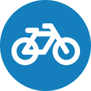

<common-sidenav #sidenav [navigationsModules]="navigationsModules" [navigationsApplication]="navigationsApplication"
[navigationsPersonal]="navigationsPeronal" [translate]="translate" [showLogoutButt]='false'>
  <common-toolbar #toolbar [translate]="translate" [title]="settings.title" showMenuBtn="true"
    [navigationsModules]="navigationsModules" [navigationsApplication]="navigationsApplication"
    (sidenavBtnClick)="sidenav.open()" [showLongToolbar]='true' [heightOfAdditionalToolbar]="100" (login)="redirectLogin()" [showTitlebarContent]="isDesktop()">
    <div content>
      <button mat-fab class="white-logo" [disableRipple]="true"><i class="fas fa-bicycle"></i></button>
      <div class="title">BikeCounter</div>
    </div>
    <div title class='logo'></div>
  </common-toolbar>
  <div class="container">
    <mat-tab-group>
      <mat-tab [label]="'AUTH.TITLE' | translate"> <app-auth-dialog [registration]="false" [toolbar]="toolbar"></app-auth-dialog></mat-tab>
      <mat-tab [label]="'REGISTRATION.TITLE' | translate"> <app-auth-dialog [registration]="true" [toolbar]="toolbar"></app-auth-dialog></mat-tab>
  </mat-tab-group>
  </div>


</common-sidenav>
